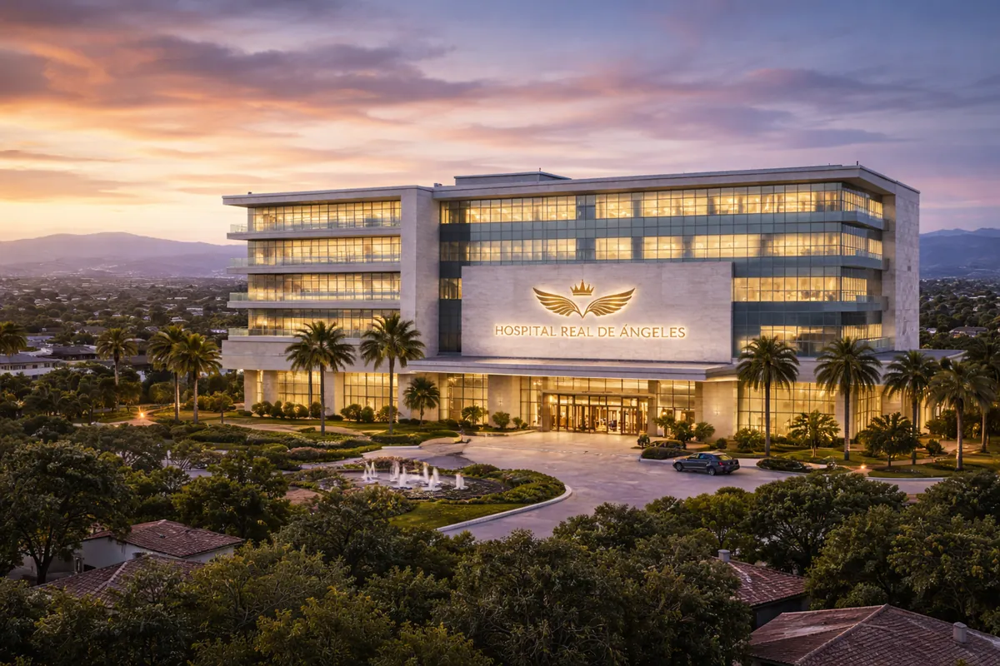
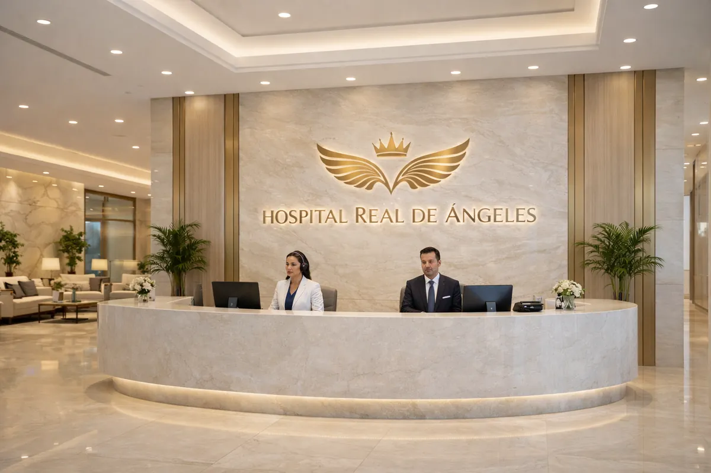
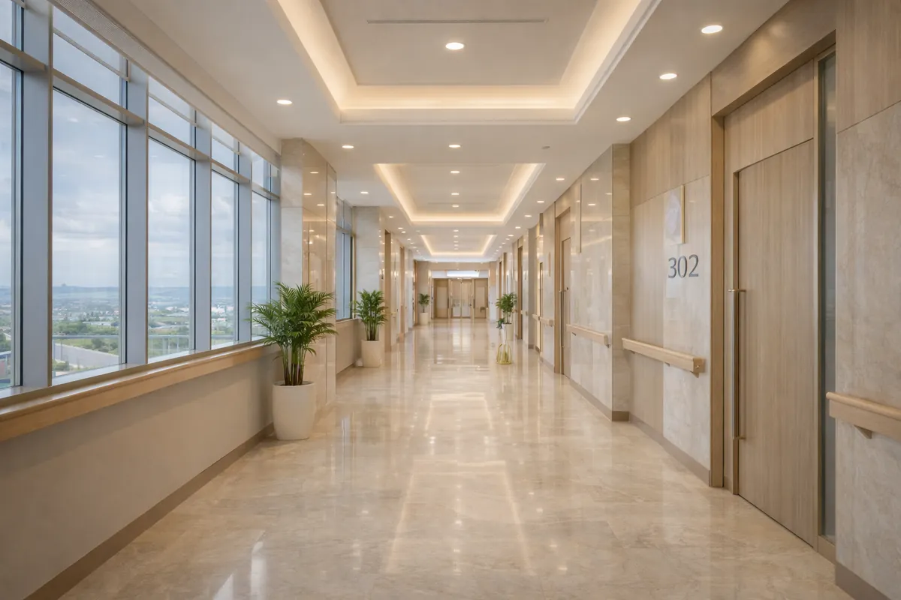

Salud & Infraestructura · Zacatecas, México
Hospital Real de Ángeles
Hospital privado de alta especialidad con tecnología de clase mundial
Hospital privado de alta especialidad con tecnología de clase mundial
Hospital Real de Ángeles será un hospital privado de alta especialidad en Zacatecas, diseñado para ofrecer excelencia médica en un entorno premium. Cuenta con tecnología de vanguardia, infraestructura moderna y diseño enfocado en el confort, seguridad y privacidad del paciente.
Cada espacio está concebido para brindar una experiencia hospitalaria de alto nivel que combina eficiencia clínica, atención humanizada y estándares de calidad internacional.

Más de 6 quirófanos equipados con tecnología de última generación para cirugías de alta complejidad y mínima invasión.
Unidad pediátrica completa con equipamiento especializado y equipo médico con formación en medicina infantil de alto nivel.
40 habitaciones diseñadas con estándares de hotelería de lujo, garantizando comodidad y privacidad durante la recuperación.
Amplia cartera de especialidades bajo un mismo techo: cardiología, oncología, neurología, ortopedia y más.
Centro de diagnóstico completo con laboratorio clínico, radiología, resonancia magnética y tomografía de alta definición.
Servicio de urgencias operativo las 24 horas con unidades de terapia intensiva adultos y pediátrica.


Zacatecas es un estado con alta demanda de servicios médicos privados de calidad y escasa oferta hospitalaria de alto nivel. Hospital Real de Ángeles llegará a cubrir una necesidad real con un producto de primera clase.
Contáctanos para recibir la presentación completa del proyecto, estructura, cronograma y toda la información disponible.